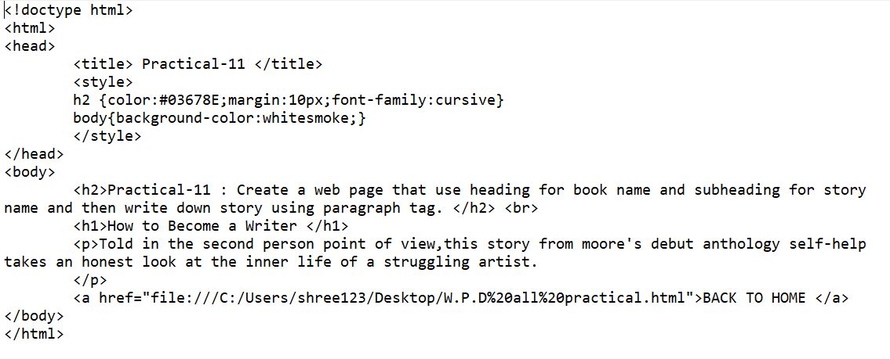

Practical-11 : Create a web page that use heading for book name and subheading for story name and then write down story using paragraph tag.

OUTPUT :
How to Become a Writer
Told in the second person point of view,this story from moore's debut anthology self-help takes an honest look at the inner life of a struggling artist.
BACK TO HOME